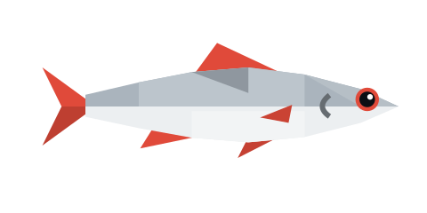
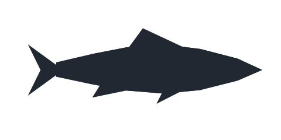
Small, silver, and everywhere. The river’s welcome committee.
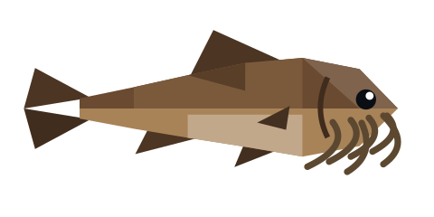
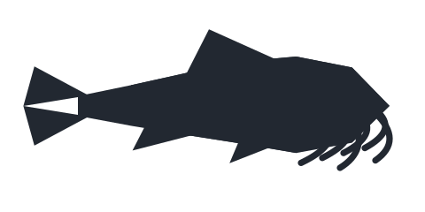
Lives in the mud, likes the mud, will tell you about the mud.
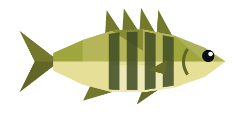
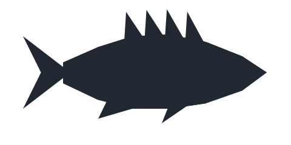
Hides in the reeds and dares you to find it.
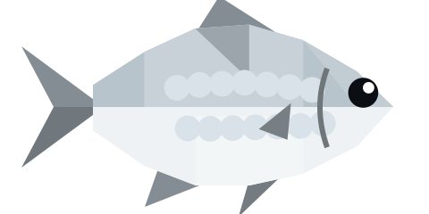
Flat as a dinner plate and about as shiny.
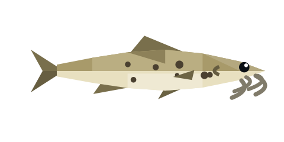
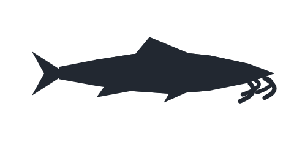
Tiny, curious, and always first to the bait.
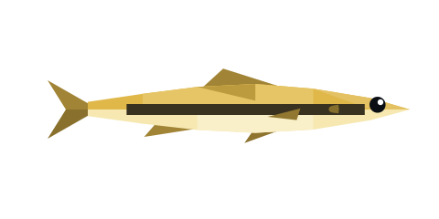
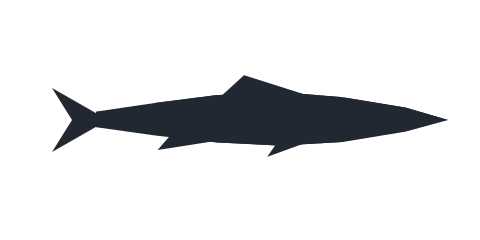
Barely a fish. Very proud of it anyway.
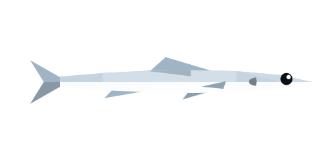
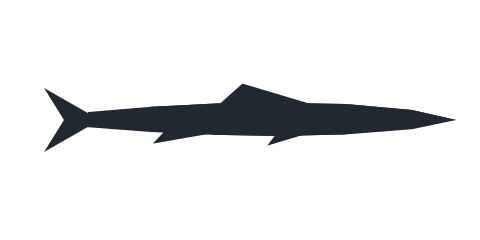
Flickers at the surface like someone’s dropping coins.
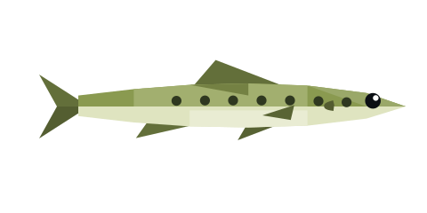
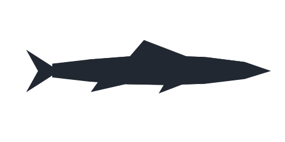
Quick, tidy and never late.
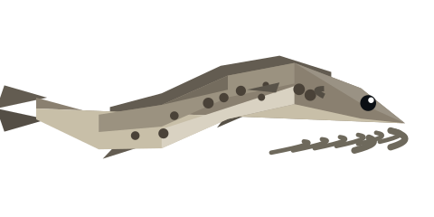
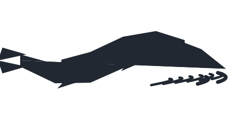
Looks exactly like a pebble until it doesn’t.
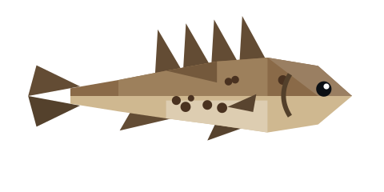
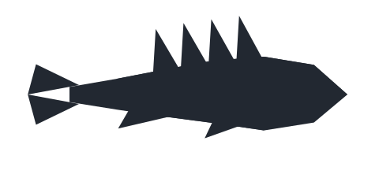
Prickly to hold, sweet-natured underneath.
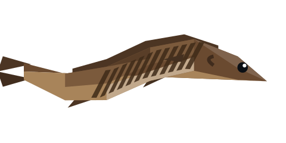
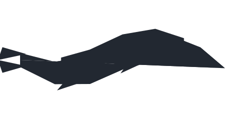
Bram swears he didn’t name it. Bram named it.
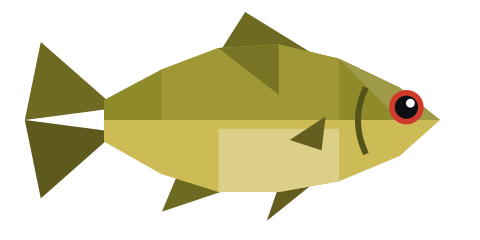
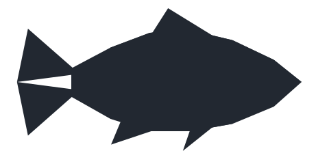
Glows like old brass in the evening light.
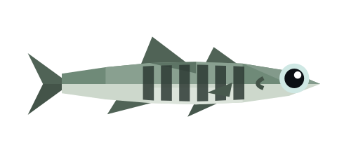
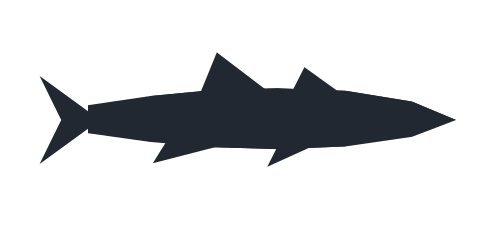
Sees in the dark better than you do. Knows it, too.
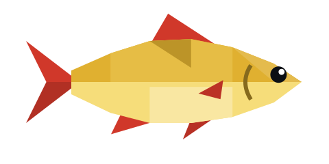
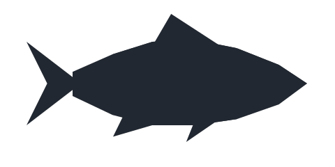
Sunbathes near the surface on nice days.
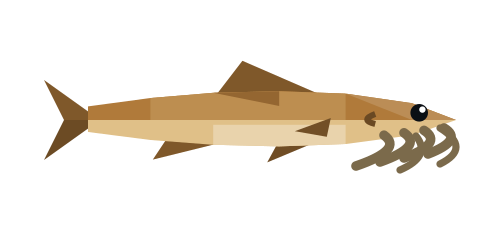
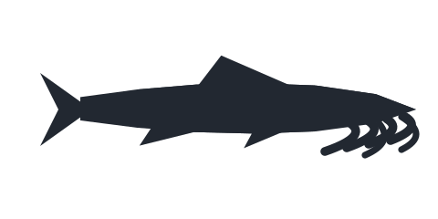
Sweeps the riverbed like it’s expecting guests.
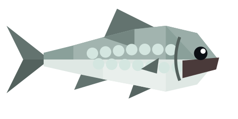
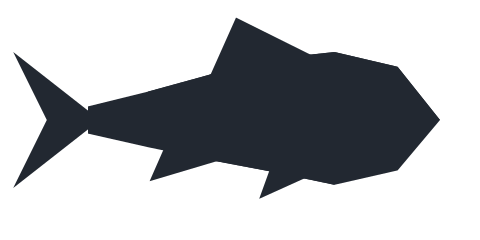
Eats anything. Admires itself in every puddle.
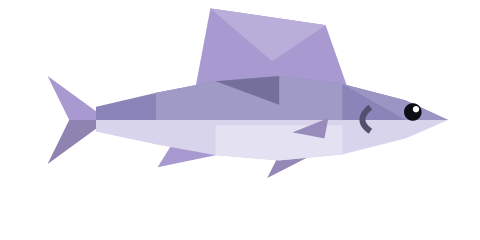
Raises its sail at first light, like it’s signalling someone.
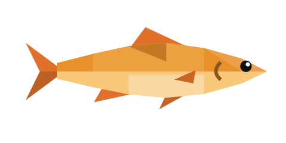
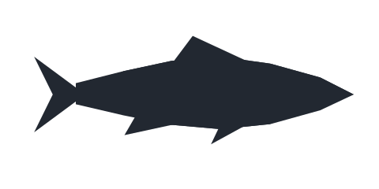
So orange the herons think it’s a warning.
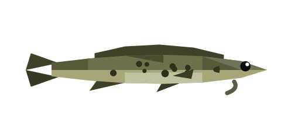
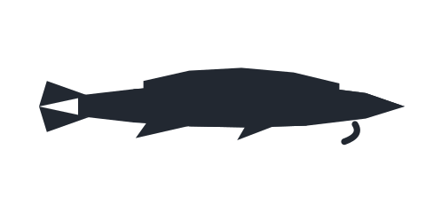
Only comes out when the river goes quiet.
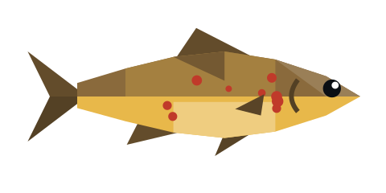
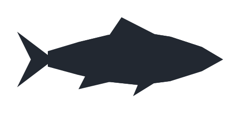
Waits in the millrace every morning for whatever the wheel brings down.
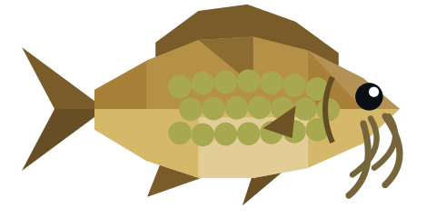
Rests under the willows, where the light is green and slow.
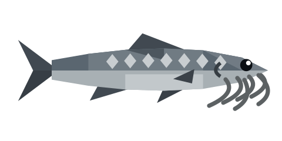
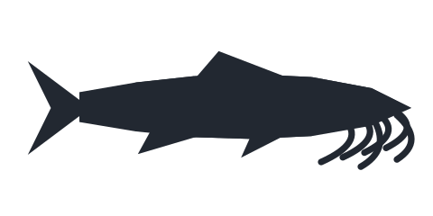
Older than the bridge above it. Possibly older than the river.
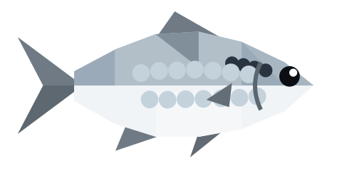
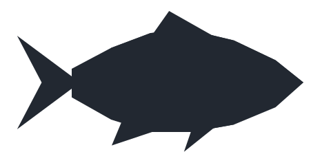
Swims up from the sea every morning, then changes its mind.
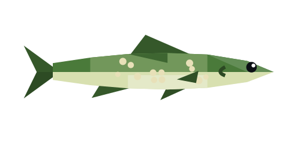
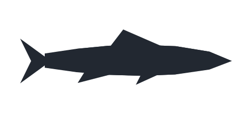
Lies in the slow bends, perfectly still, perfectly smug.
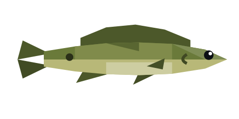
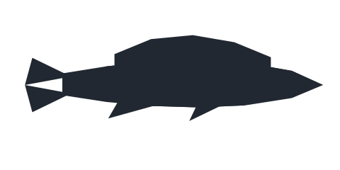
Breathes air when the water’s too warm. Clever old thing.
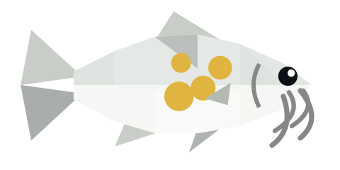
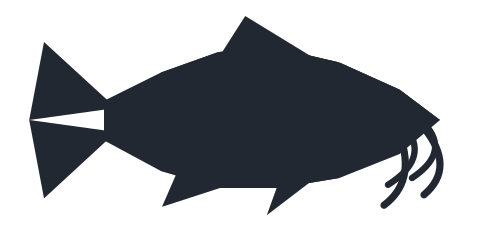
Drifts under the lamp like a lost paper lantern.
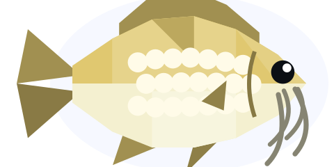
Rises on clear nights to look at the moon. Then right back down.
The river’s strongest swimmer. Bram’s best line was made for this one.
Holds court under the lily pads. Never seems surprised.
Seen once, then gone between the reeds. Locals argue about it.
Comes to the lantern on the mill dock, like a moth with fins.
It only came back when the wheel started turning. Bram says it missed the noise.